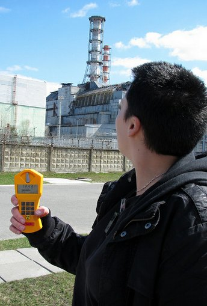

Submit your presentation

Since we do not pretend to be aware of all the amazing tech out there, we
are expecting your proposals.
Send a mail to orga AT ehsm.eu with at least the following information:
- Name of the speaker
- Short bio of the speaker and/or his/her team
- Speaker contact information (e-mail + mobile phone if possible)
- Where the speaker will be traveling from
- Title of the presentation
- Abstract
- Links to more information (if available)
The standard format for presentations is one-hour lectures, but we are
flexible. Write us a note if you have special time or other
requirements.
We are waiting for your presentations in these areas:
- Open hardware
- Big open source project management
- Licensing and business models for open source
- Manufacturing: metalwork, glass blowing, ...
- Electronics engineering
- Signal processing
- Radars
- Semiconductors
- Rocket science
- Thin film technologies
- Hardware acceleration
- Satellite design
- Vacuum electron devices
- Millimeter wave technology
- Reverse engineering
- Applied quantum physics
- Thermodynamics
- Nuclear science
- Nanotechnologies
- Ultra high speed photography
...and anything awesome which is not listed here.
If you know of someone else's work that would be relevant, feel free to
tip us! (orga AT ehsm.eu)
We are planning to cover speakers' travel and accommodation expenses, as best as the budget allows (depending on ticket sales).
For academia
While researchers are most welcome to present their work at EHSM, please
note that this is not a traditional academic conference. We will not
formally publish proceedings(*), and we do not claim affiliation with
any institution. We are also OK with previously published work, we
simply expect high-quality presentations.
(*) Contrary to the practice of most academic publishers, we will,
however, do our best to ensure the free dissemination of information.
Dates
Doors open: December 28th, 2012, 09:00
Doors close: December 30th, 2012, 18:00
Submission deadline: October 15th, 2012 Extended to November 4th
Notifications of acceptance : November 21st, 2012 (or sooner)
Full programme published: November 28th, 2012